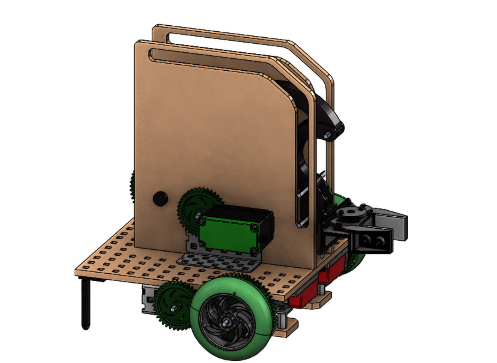
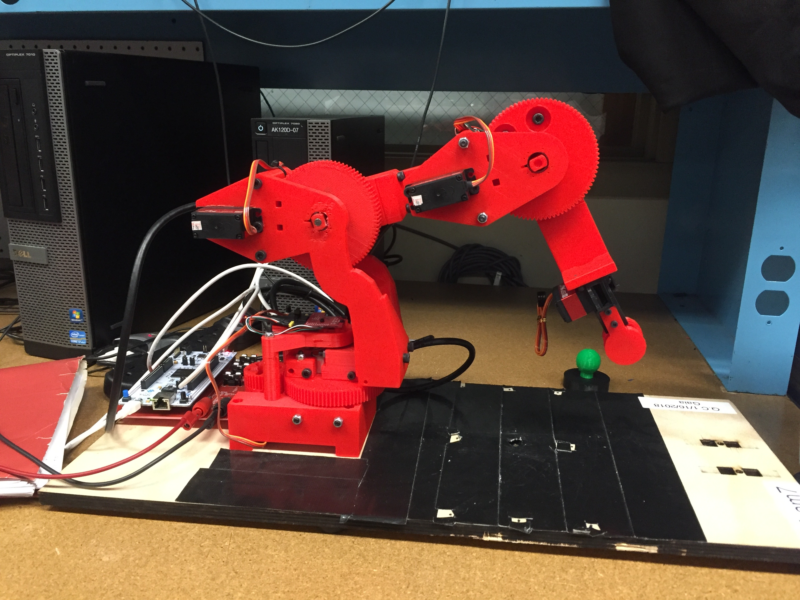
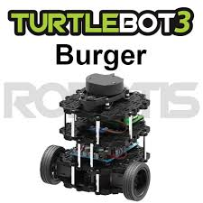

This page details all of my robotics projects from the robotics course sequence at WPI.
I took the introductory robotics course from January to March in 2016. This course introduced me to programming and basic electrical circuit design. This course consisted of short labs and a final project robot. This robot needed to be designed to complete obstacles in a field with another robot competing at the same time. The main task was to score points by placing foam blocks through a hoop or in a short bin. The robot my team and I designed was a a four wheel drive remote controlled robot with 2 omni-wheels to allow it to rotate about the back wheels. It had a gripper with an extendable length and could rotate so that foam blocks could be picked up and dropped into the hoop. This robot also had to do a simple autonomous program at the start for extra points. Our robot was one of the only ones in the class to successfully execute an autonomous program. Unfortunately, many of the documents for this class have been lost but below is a short video clip of one of the rounds in the competition.

I took Robotics 2001 in the fall of 2016. This class focused on the mechanical side of robotics. For the final project, the robot need to insert and remove plastic rods from holders using a 4-bar mechanism on a playing field. The robot also needed to communicate with a base station. Some of these messages include a heartbeat, start, stop and status messages. This task was to simulate a larger robot moving nuclear material between reactors and storage. We conducted force analysis on the 4-bar mechanism and motor torque calculations. The robot navigated the field by following black lines between storage areas. My role on the team was mainly to program the robot but I also did a large amount of the design calculations. The final report can be downloaded below, which included the calculations and final code.
I took Robotics 2002 in the spring of 2017. This class focused on sensing the environment. For the final project we had to design a robot to autonomously navigate a maze and extinguish a lit candle. Our design was unique in that we used a Nintendo WiiMote to sense the flame. The WiiMote sent data such as size of the flame in its view, and x and y coordinates in the plane parallel to the front of it. The WiiMote was mounted onto a rotating platform with a large fan that would scan as the robot traversed the maze. Once the flame was found, the rotating platform would keep the fan aimed at the candle until the Robot became close enough to put it out. The robot used ultrasonic sensors to keep itself following the wall and could detect if it were about to move off of a cliff. More details can be found in the video. The lab report can also be found below.
I took Robotics 3001 in the spring of 2018. This class focused on controlling a 3-degree of freedom robotic manipulator. We used MATLAB to complete a series of labs that built toward the final project. The final project combined computer vision with the robotic manipulator to be able to pick up and sort 3 different colored objects we called "orbs". The robotic manipulator was equipped with strain gauges to sense weight of objects but the construction of the arm proved to make the readings from these sensors meaningless for the weights we were tasked at measuring. The code my team wrote would in theory be able to sort objects of different weights if the sensors were reliable. I took the lead in this project, writing most of the robot code, mostly because I enjoy coding so much. I added some bonus features for extra credit and created an in-depth video of the experience. This video can be found below and details the robot's functions. The final lab report for this class is also available for download.


I took Robotics 3002 later in the spring of 2018. This class focused on using the Robot Operating System (ROS) to program the robot to map and explore a maze. There were 4 labs that built up the code needed to complete the final lab. The first lab was a tutorial in ROS. The second had us program basic movement functions for the robot. The third lab had us implement an A-Star search algorithm to explore a maze. The fourth lab had us implement obstacle expansion to the cost-map, path plan and avoid obstacles. Labs 3 and 4 were done in simulation so lab 5 was to get the real robot to map an area by identifying regions to explore and navigate to them by implementing past code. The robot was able to map a maze and follow a planned path, however there were errors in how ROS transformed reference frames so that the location of the robot was incorrect, affecting the robot's ability to accurately path plan. Full details of this experience can be found in the lab report available for download below